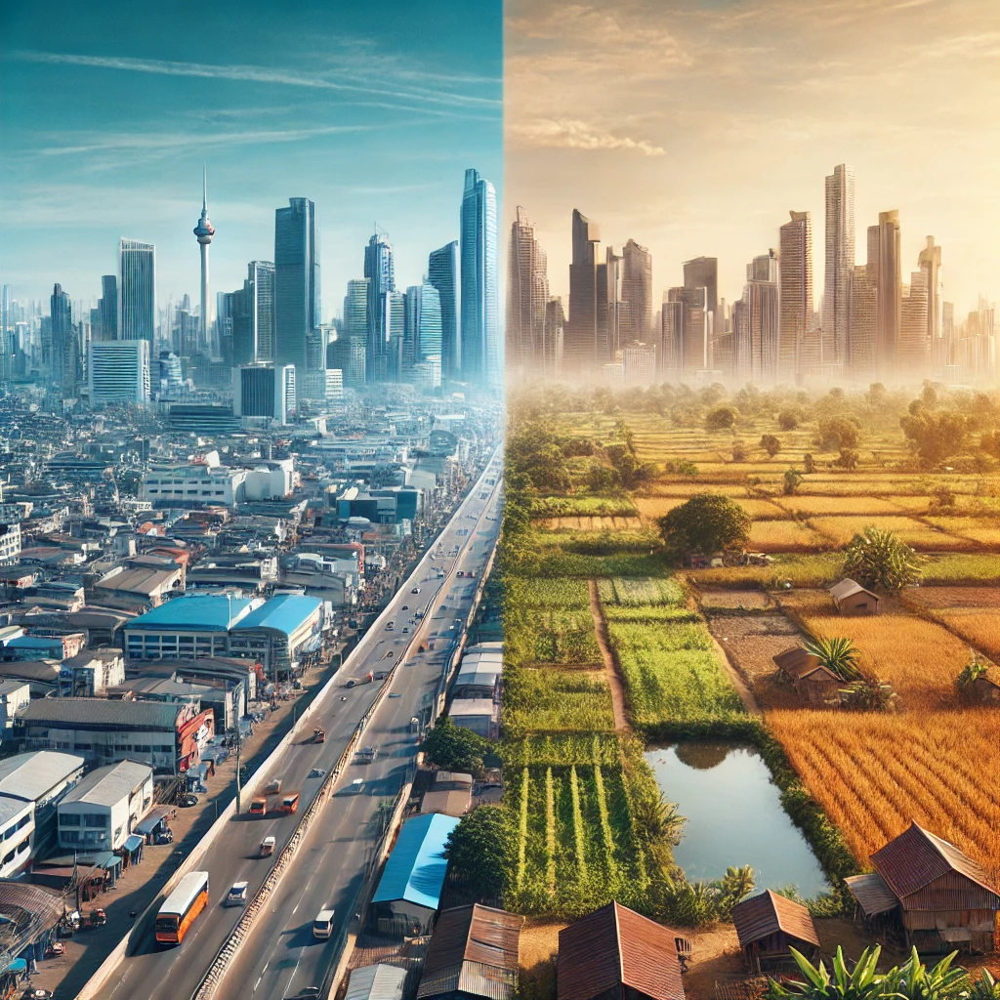

#1
GNPs más bajos
Los 10 países con el Producto Interno Bruto (GNP) más bajo y analizar cómo se relaciona esta condición económica con su forma de gobierno
#2
Ciudades más pobladas
Las 5 ciudades más pobladas por cada continente.

#3
Concentración en ciudades
Los países donde la población que reside en ciudades representa el mayor porcentaje en relación con la población total del país
#4
Esperanza de vida por continente
La esperanza de vida promedio de los países en cada continente
#5
Diversidad linguística
Los países con la mayor diversidad lingüística, medida por el número de idiomas hablados, en ciudades con alta población.